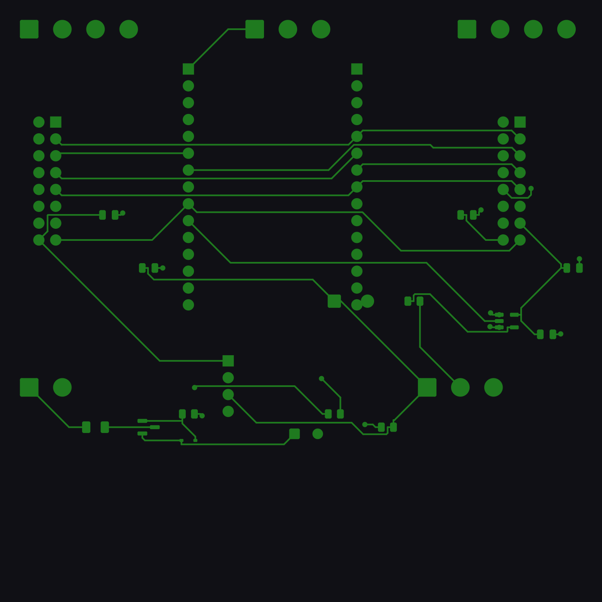
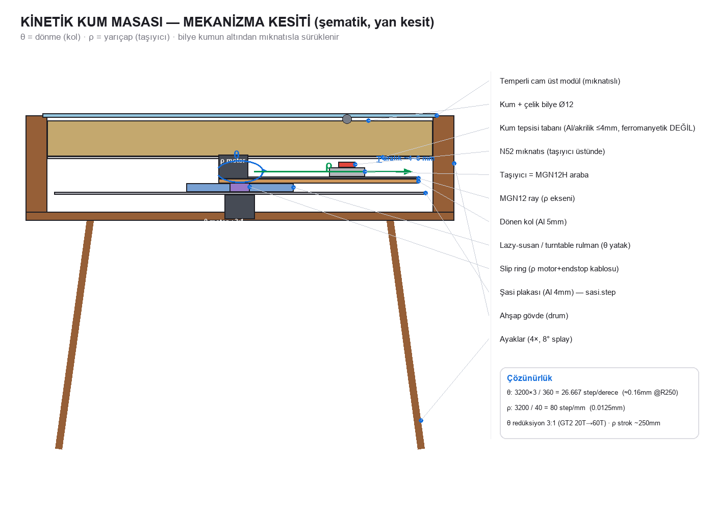
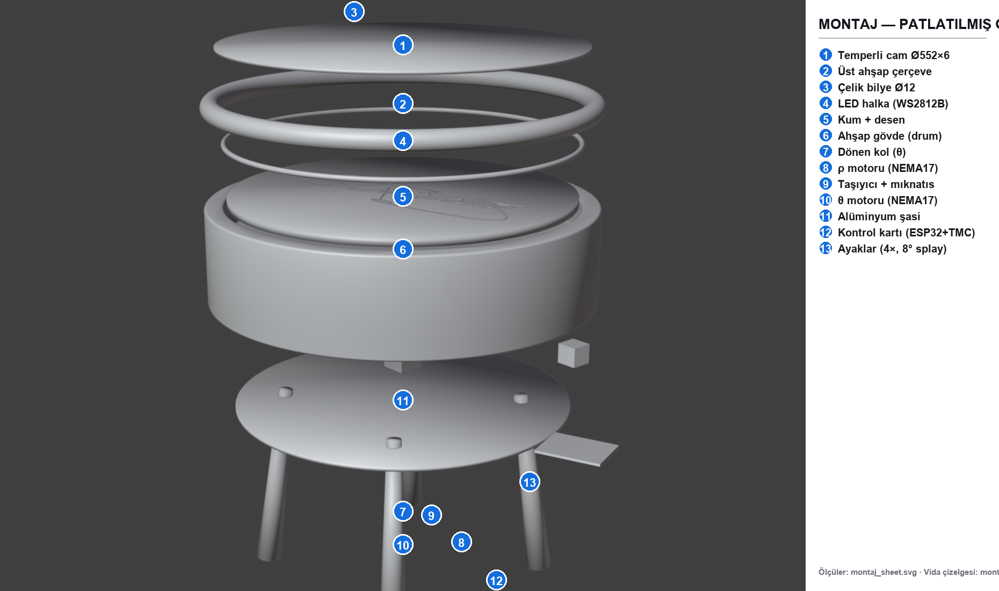
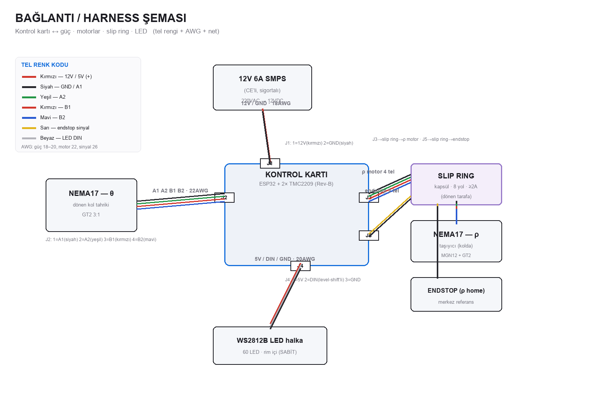

Üretim Gerçekleme
Bir deneme değil; profesyonel donanım geliştirme (NPI) disiplinine göre. Her alt sistemin gerçek olgunluğu açıkça belirtilir.
| Alt sistem | Durum | Not |
|---|---|---|
| Mekanik tasarım | 🟡 Tasarlandı | Kinematik + kesit + montaj + DXF/STEP; fiziksel prototip yok |
| Kontrol kartı (PCB) | 🟠 Rev-B — fiziksel test EDİLMEDİ | Bulgular işlendi, yeniden route (0 short); sıra: prototip + bring-up |
| Firmware | 🟠 Mimari + config | FluidNC + Dune Weaver; cihazda doğrulanmadı |
| BOM / maliyet | 🟢 Hazır | Gerçek malzeme + TR fiyat + MSRP |
| Görseller | 🟢 Hazır | Render + reklam filmi + sim |
Üretim dosyaları
İçerik sayfa içinde okunabilir; ilgili PDF/CAD çıktıları her sayfadan indirilebilir.
mimari · NPI · test · COGS · risk
Rev-B bulguları + düzeltmeler
θ/ρ kinematik · kesit · hesap
harness · pinout · slip ring
ölçüm değerleriyle
vida · tolerans · sıra
gerçek fiyat · MSRP
şasi · ayak · kol
FluidNC + Dune Weaver
Mühendislik görselleri




İndirilebilir çıktılar
Maliyet & fiyat